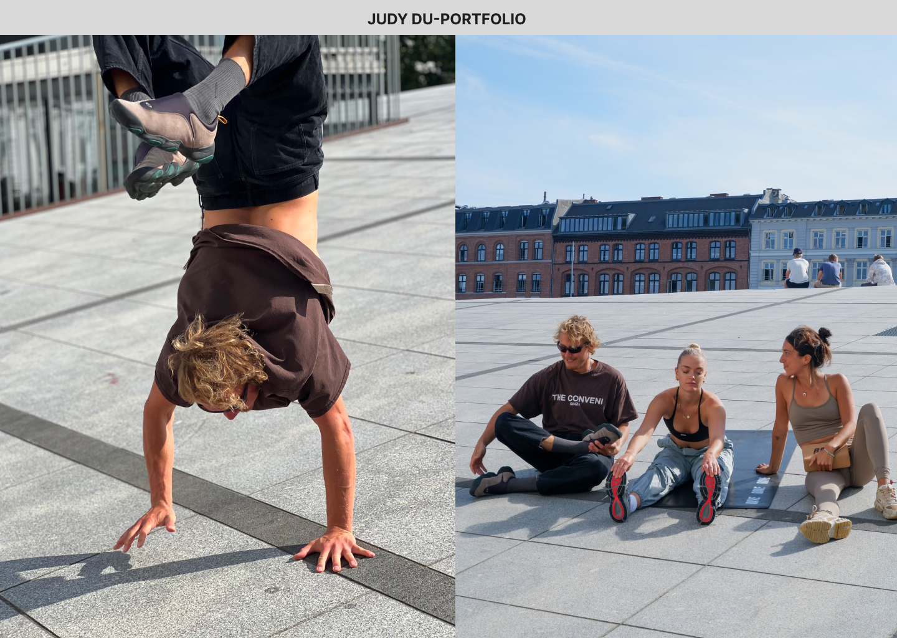
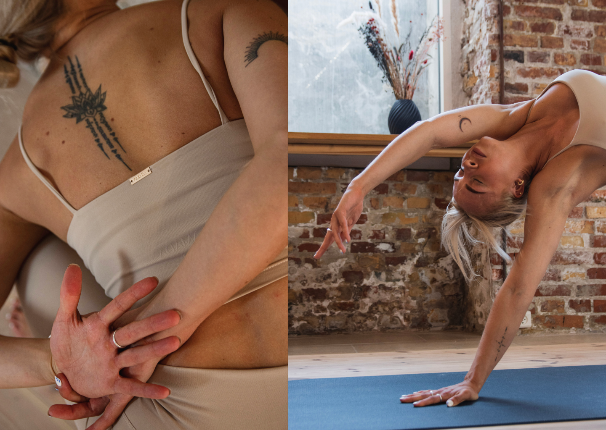
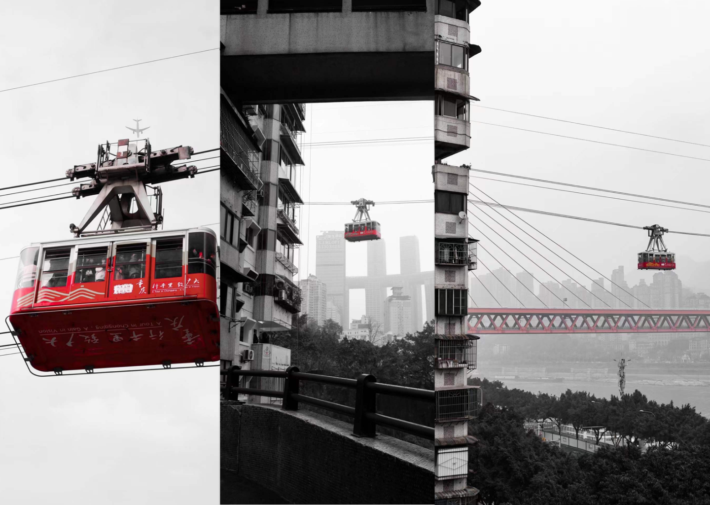

<div id="demo" class="carousel slide" data-bs-ride="carousel">
    <!-- Indicators/dots -->
    <div class="carousel-indicators">
        <button type="button" data-bs-target="#demo" data-bs-slide-to="0" class="active" aria-current="true"
            aria-label="Slide 1"></button>
        <button type="button" data-bs-target="#demo" data-bs-slide-to="1" aria-label="Slide 2"></button>
        <button type="button" data-bs-target="#demo" data-bs-slide-to="2" aria-label="Slide 3"></button>
        <button type="button" data-bs-target="#demo" data-bs-slide-to="3" aria-label="Slide 4"></button>
    </div>


    <!-- The slideshow/carousel -->
    <div class="carousel-inner">
        <div class="carousel-item active">
            
        </div>
        <div class="carousel-item">
            
        </div>
        <div class="carousel-item">
            
        </div>
        <div class="carousel-item">
            
        </div>
    </div>

    <!-- Left and right controls/icons -->
    <button class="carousel-control-prev" type="button" data-bs-target="#demo" data-bs-slide="prev"
        aria-label="Previous slide">
        <span class="carousel-control-prev-icon" aria-hidden="true"></span>
    </button>
    <button class="carousel-control-next" type="button" data-bs-target="#demo" data-bs-slide="next"
        aria-label="Next slide">
        <span class="carousel-control-next-icon" aria-hidden="true"></span>
    </button>
</div>